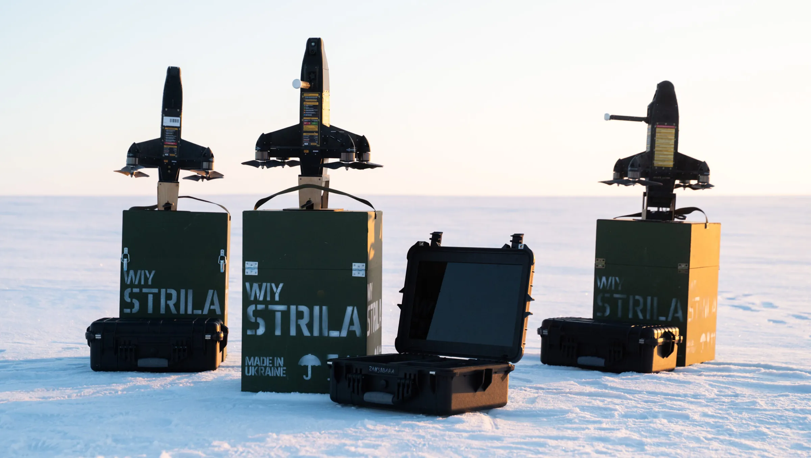
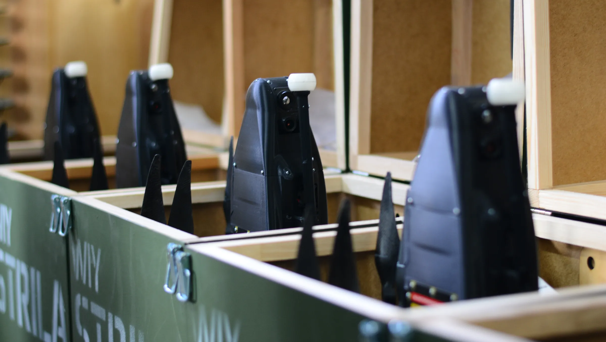
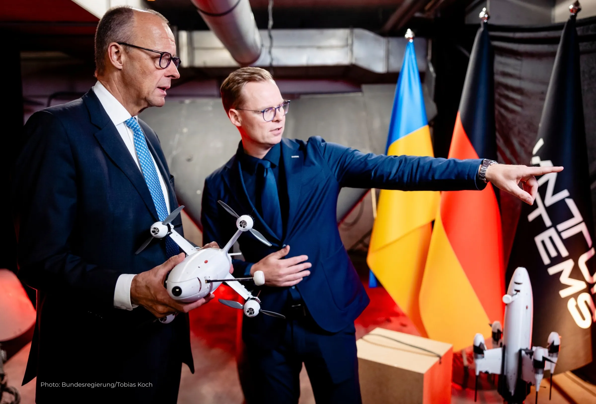
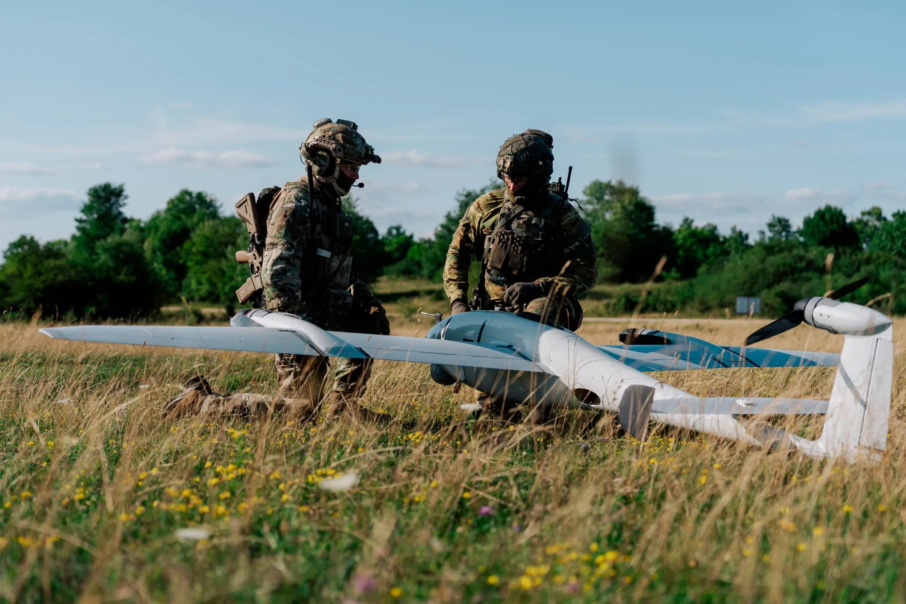
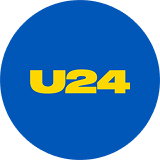
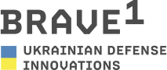
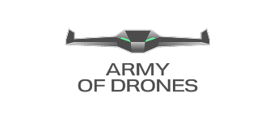

About WIY
Combat-proven unmanned systems, engineered in Ukraine.
WIY Advanced Aerial Systems develops and manufactures interceptor, reconnaissance and strike UAVs, ground control stations and related systems. Our platforms operate on the front line every day, solving real tasks for units of Ukraine’s Defence Forces.

From the front line to full-rate production

Ukrainian experience. European scale.
As part of the Quantum Systems Group, WIY combines battlefield-driven engineering with the industrial capacity of a European leader in autonomous multi-domain systems. Together, through the joint venture Quantum WIY Industries, we scale interceptor production for Ukraine and Allied air defence.
quantum-systems.comBuilt to Allied standards
Verified NATO supplier — NCAGE A44NJ
NATO-codified products (NSN)
ISO certified production
MoD Military Representative Office

We stay with the crew after delivery
- 01Operator training: ground control station, piloting, interception tactics and crew coordination — theory and field practice.
- 0212-month warranty with repair and maintenance; post-warranty service on request.
- 03Software and firmware updates throughout the product lifecycle.
- 04Operational and mission-use consulting.
Trusted across the defence sector
We supply under state contracts, directly to units of the Defence Forces, and via foundations and volunteer organisations.


